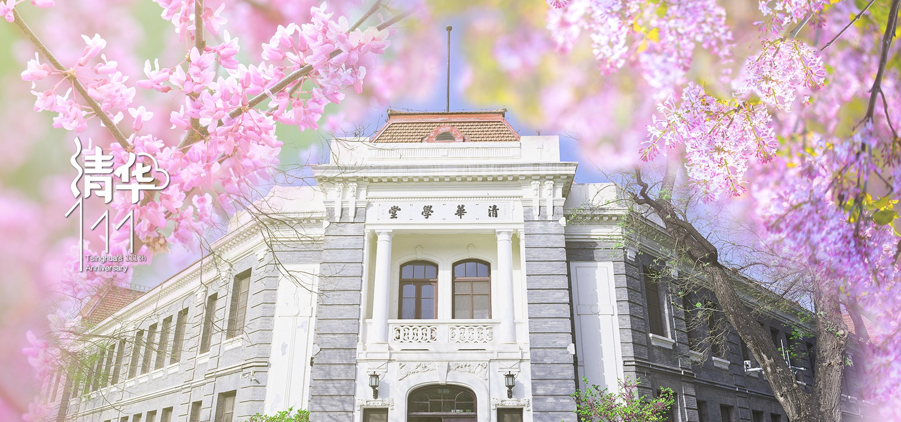

- 本科生招生
- 研究生招生
- 国际学院招生
- 在线教育
- 终身教育
教育教学
清华大学培育和凝聚了一批又一批高水平的专家学者。近年来，学校遵循"引进与培养并举"的方针，加强青年教师队伍建设，在国内外选聘优秀人才，师资队伍水平稳步提高。
清华大学围绕立德树人的根本任务，确立价值塑造、能力培养和知识传授“三位一体”的教育理念和人才培养模式，致力于培养肩负使命、追求卓越的人，使学生具备健全人格、宽厚基础、创新思维、全球视野和社会责任感，实现全面发展和个性发展相结合。
学校构建以通识教育为基础、通识教育与专业教育相融合的本科教育体系，通过优化本科培养方案、建设优质本科课程、持续提升本科教育质量，努力培养学生成为“高素质、高层次、多样化、创造性”的社会主义建设者和接班人。